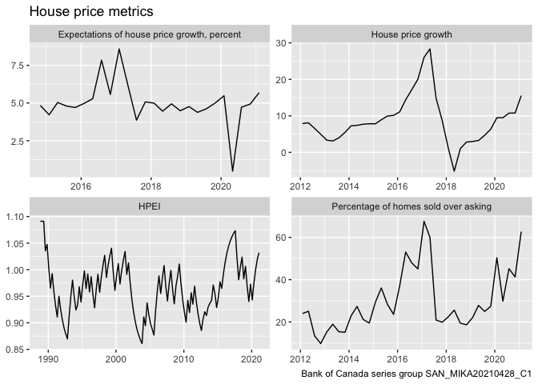

Documentation
canbank R package home page and reference guide
Installation
You can install the released version of canbank from CRAN with:
remotes::install_github("mountainmath/canbank")Example
The package can import data for one or several Bank of Canada time series or series groups. For example, to access the series group “SAN_MIKA20210428_C1” with metrics pertaining to house price growth in Canada we can easily retrieve the data using the get_boc_series_group method.
library(canbank)
library(dplyr)
#>
#> Attaching package: 'dplyr'
#> The following objects are masked from 'package:stats':
#>
#> filter, lag
#> The following objects are masked from 'package:base':
#>
#> intersect, setdiff, setequal, union
library(ggplot2)
## basic example code
data <- get_boc_series_group("SAN_MIKA20210428_C1") %>%
mutate(name=gsub(" \\(.+$","",label)) %>%
filter(!is.na(Value))
#> Downloading BOC series group data for SAN_MIKA20210428_C1
ggplot(data,aes(x=Date,y=Value)) +
geom_line() +
facet_wrap(~name, scales="free") +
labs(title="House price metrics",
y=NULL,x=NULL,
caption="Bank of Canada series group SAN_MIKA20210428_C1")